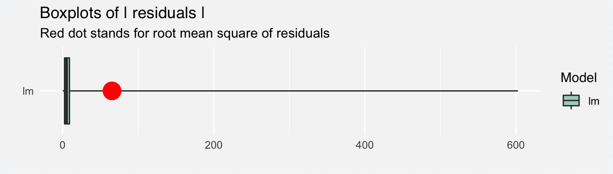

Let’s summarize what has happened in the previous sections.
apartments dataset.construction_year is important for the random forest model.construction_year and the price of square meter is non linear.In this section we showed how to improve the basic linear model by feature engineering of construction_year. Findings from the random forest models will help to create a new feature for the linear model.
library("DALEX")
apartments_lm_model_improved <- lm(m2.price ~ I(construction.year < 1935 | construction.year > 1995) + surface + floor +
no.rooms + district, data = apartments)
explainer_lm_improved <- explain(apartments_lm_model_improved,
data = apartmentsTest[,2:6], y = apartmentsTest$m2.price)
mp_lm_improved <- model_performance(explainer_lm_improved)
plot(mp_lm_improved, geom = "boxplot")(#fig:final_model)Distribution of residuals for the new improved linear model
In conclusion, the results presented above prove that the apartments_lm_model_improved model is much better than the two remaining models discussed in the chapter 3.
In this use-case we showed that explainers implemented in DALEX help to better understand the model and that this knowledge may be used to create a better final model.